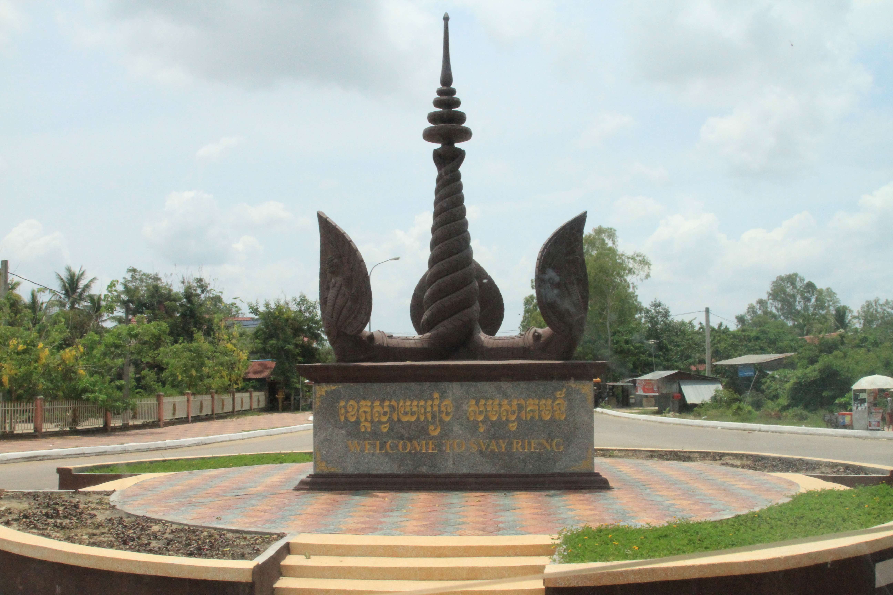

អំពីខេត្តស្វាយរៀង
ខេត្តស្វាយរៀង ស្ថិតនៅភាគអាគ្នេយ៍នៃព្រះរាជាណាចក្រកម្ពុជា និងមានព្រំប្រទល់ជាប់ប្រទេសវៀតណាម។ ខេត្តនេះត្រូវបានគេស្គាល់ថាជាតំបន់កសិកម្មដ៏សំខាន់ ដែលសម្បូរទៅដោយវាលស្រែ និងការដាំដុះស្រូវ។ លើសពីនេះ ស្វាយរៀងក៏ជាមជ្ឈមណ្ឌលពាណិជ្ជកម្ម និងការដឹកជញ្ជូន តាមព្រំដែនអន្តរជាតិផងដែរ។
ប្រវត្តិសង្ខេប
ខេត្តស្វាយរៀងមានប្រវត្តិយូរអង្វែង និងធ្លាប់ជាតំបន់សំខាន់ ក្នុងការតភ្ជាប់ការធ្វើពាណិជ្ជកម្មរវាងកម្ពុជា និងវៀតណាម។ ខេត្តនេះបានអភិវឌ្ឍយ៉ាងឆាប់រហ័សលើវិស័យកសិកម្ម ពាណិជ្ជកម្ម និងឧស្សាហកម្ម ជាពិសេសតំបន់សេដ្ឋកិច្ចពិសេសដែលទាក់ទាញការវិនិយោគជាច្រើន។
កន្លែងទេសចរណ៍សំខាន់ៗ
- រមណីយដ្ឋានប្រាសាទបាសាក់
- បឹងវាលស្រែស្វាយរៀង
- សួនច្បារក្រុងស្វាយរៀង
- ច្រកទ្វារព្រំដែនអន្តរជាតិបាវិត
- កាស៊ីណូបាវិត
- ផ្សារក្រុងបាវិត
ទីតាំងភូមិសាស្ត្រ
ខេត្តស្វាយរៀង ស្ថិតនៅភាគអាគ្នេយ៍នៃប្រទេសកម្ពុជា មានព្រំប្រទល់ជាប់ខេត្តព្រៃវែង និងព្រំដែនប្រទេសវៀតណាម។ ទីតាំងភូមិសាស្ត្រនេះបានធ្វើឱ្យខេត្តក្លាយជា ច្រកពាណិជ្ជកម្មអន្តរជាតិដ៏សំខាន់ ដែលរួមចំណែកក្នុងការអភិវឌ្ឍសេដ្ឋកិច្ច និងការដឹកជញ្ជូនរវាងប្រទេសទាំងពីរ។